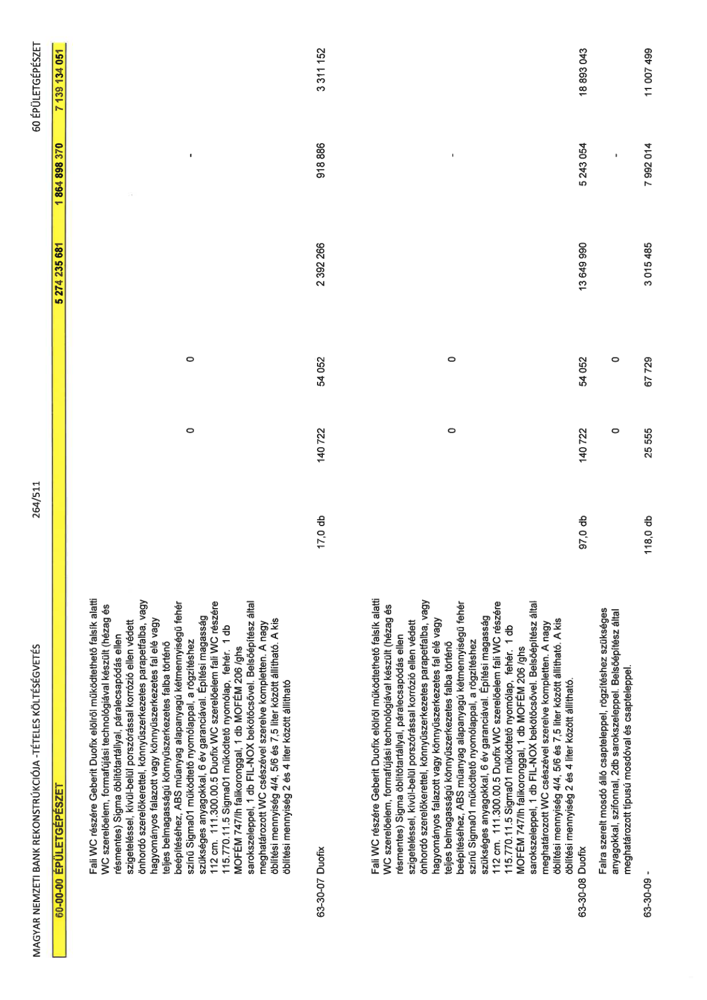

| Tétel | Menny. | Egys. | Anyag e.ár (net HUF) | Díj e.ár (net HUF) | Anyag összesen (net HUF) | Díj összesen (net HUF) | Anyag+Díj összesen (net HUF) |
|---|---|---|---|---|---|---|---|
| 60-00-00 ÉPÜLETGÉPÉSZET | NaN | NaN | 0 | 0 | 5 274 235 681 | 1 864 898 370 | 7 139 134 051 |
| Fali WC részére Geberit Duofix elölről működtethető falsík alatti WC szerelőelem, formafújási technológiával készült (hézag és résmentes) Sigma öblítőtartállyal, páralecsapódás ellen szigeteléssel, kívül-belül porszórással korrózió ellen védett önhordó szerelőkerettel, könnyűszerkezetes parapetfalba, vagy hagyományos falazott vagy könnyűszerkezetes fal elé vagy teljes belmagasságú könnyűszerkezetes falba történő beépítéséhez, ABS műanyag alapanyagú kétmennyiségű fehér színű Sigma01 működtető nyomólappal, a rögzítéshez szükséges anyagokkal, 6 év garanciával. Építési magasság 112 cm. 111.300.00.5 Duofix WC szerelőelem fali WC részére 115.770.11.5 Sigma01 működtető nyomólap, fehér. 1 db MOFÉM 747/lh falikoronggal, 1 db MOFÉM 206 /ghs sarokszeleppel, 1 db FIL-NOX bekötőcsővel. Belsőépítész által meghatározott WC csészével szerelve kompletten. A nagy öblítési mennyiség 4/4, 5/6 és 7,5 liter között állítható. A kis öblítési mennyiség 2 és 4 liter között állítható | 0 | 0 | 0 | 0 | 0 | 0 | 0 |
| 63-30-07 Duofix | 17,0 | db | 140 722 | 54 052 | 2 392 266 | 918 886 | 3 311 152 |
| Fali WC részére Geberit Duofix elölről működtethető falsík alatti WC szerelőelem, formafújási technológiával készült (hézag és résmentes) Sigma öblítőtartállyal, páralecsapódás ellen szigeteléssel, kívül-belül porszórással korrózió ellen védett önhordó szerelőkerettel, könnyűszerkezetes parapetfalba, vagy hagyományos falazott vagy könnyűszerkezetes fal elé vagy teljes belmagasságú könnyűszerkezetes falba történő beépítéséhez, ABS műanyag alapanyagú kétmennyiségű fehér színű Sigma01 működtető nyomólappal, a rögzítéshez szükséges anyagokkal, 6 év garanciával. Építési magasság 112 cm. 111.300.00.5 Duofix WC szerelőelem fali WC részére 115.770.11.5 Sigma01 működtető nyomólap, fehér. 1 db MOFÉM 747/lh falikoronggal, 1 db MOFÉM 206 /ghs sarokszeleppel, 1 db FIL-NOX bekötőcsővel. Belsőépítész által meghatározott WC csészével szerelve kompletten. A nagy öblítési mennyiség 4/4, 5/6 és 7,5 liter között állítható. A kis öblítési mennyiség 2 és 4 liter között állítható. | 0 | 0 | 0 | 0 | 0 | 0 | 0 |
| 63-30-08 Duofix | 97,0 | db | 140 722 | 54 052 | 13 649 990 | 5 243 054 | 18 893 043 |
| Falra szerelt mosdó álló csapteleppel, rögzítéshez szükséges anyagokkal, szifonnal, 2db sarokszeleppel. Belsőépítész által meghatározott típusú mosdóval és csapteleppel. | 0 | 0 | 0 | 0 | 0 | 0 | 0 |
| 63-30-09 - | 118,0 | db | 25 555 | 67 729 | 3 015 485 | 7 992 014 | 11 007 499 |
